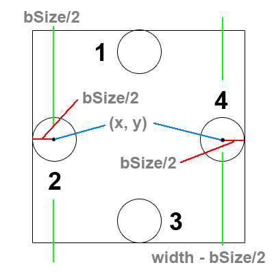
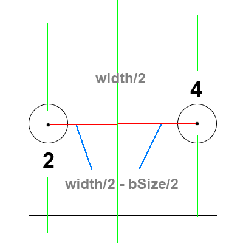
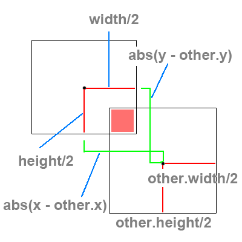
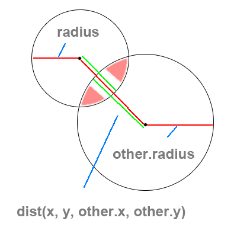

Goals
- Wall Collisions
- Type A
- Type B
- Concerns
- Object Collisions
- Box
- Circle
- Resolution
- Concerns
- Advanced Principles
- Resolution
- N-Squared Problems
- Box Volume and Accuracy
Resources
http://processing.org/learning/topics/collision.html
http://processing.org/learning/topics/circlecollision.html
http://users.design.ucla.edu/~mflux/p5/hashcollision2/applet/
Wall Collisions - Type A
There are of course 4 walls in any 2D system. Each wall must be considered as a case. In the picture the odd numbers are the cases dealing with the y values and the height of the containing box. The even numbers are dealing with the x values and the width of the containing box.
First we're going to take a look at each case separately and how to detect each one.
Case 2:
If we want to achieve a collision between the center of our ball object and the wall, we could simply check if the x position of the ball object is less than 0. However, that doesn't look very good.
So instead of checking if the center of our ball object has passed the line given by 0 in the x direction, we're going to check if the center passed (0 + bSize/2) where bSize/2 is the radius of our ball object. This can be simplified to simply checking: is x < bSize/2?
Case 4:
On the other side, we might be inclined to check if our x position is greater than the width of the screen. But we actually want the collision to happen before half the ball is outside the box.
So instead of checking if the center of our ball object has passed the line given by width in the x direction, we're going to check if the center passed (width - bSize/2) where bSize/2 is the radius of our ball object.
Wall Collisions - Type B
Now if we only focus on cases 2 and 4. We can do some clever math to collapse them into one case.
Notice that no matter what side the ball object is on, it's distance from the center of the box is the same whether it touches the left wall from case 2, or the right wall from case 4.
This can be reduced to checking if the distance from the center of the box is greater than the edges.
Concerns
When checking walls using computers and floating point numbers, there are inaccuracies.
Sometimes a ball can go over the edge of the window, be told to reverse it's direction, but doesn't have enough velocity to make it back over this wall. This will result in the ball being stuck outside the wall, bouncing back and forth... forever.
This can be fixed in Type A detection, since you know which wall the ball hit, you can simply reset the ball's position to be sitting on the wall before reversing it's direction and send it back in. This is called penetration resolution.
Box Collisions
There are two cases to consider when performing a bounding box collision. We must detect whether the boxes overlap in both the x and y directions. In order to do this correctly we must compare the distance between the x center points of each box with the sum of half of each of their widths. Combining this with testing the distance between the y center points and the sum of the half heights of each box will tell us if in fact the boxes are overlapping.
Case X:
If we want the distance between two numbers, we simply subtract one number from the other and take the absolute value to ensure that we're always reading our distance as a positive number.
Now compare this distance to see if it is less than the sum of half of each box width.
Case Y:
This is the same as Case X, however we are comparing the distance between the two y center values.
Now we must compare this distance and see if it might be less than the sum of half the height of each box.
Circle Collisions
Circle collisions are a bit more simple than box collisions since they only deal with a single case.
Notice that at any time these two circles overlap, the distance between their center points will be less than the sum of their radii.
This is the crucial point for circular collision.
Detection:
If we want the distance between two points (as opposed to two numbers), we need to use the distance function that is built into processing.
dist(x1, y1, x2, y2); // will return the distance as a float
Now use this distance to see if it is smaller than the sum of the two radii. If it is, we know our ball objects have overlapped.
Resolution
There are many ways to resolve collisions, not all of them being equal or accurate.
Box Resolution:
To correctly resolve box collisions is beyond the scope of this course. If you are interested take a look, however it is math / geometry intensive.
Circle Resolution:
Sometimes it might be simple to reverse the direction of each colliding ball (much like a wall collision), however this is not accurate with respect to direction.
We can increase the direction accuracy by finding out the angle of the collision between two circles and send them away from each other with relation to the angle of impact.
The final problem with circular collision is how to maintain a conservation of momentum. If all the masses of every object are equal, we must make sure that the total velocity at impact equals the total velocity after impact. This can be slightly trickier to solve correctly with just a few lines of code.
Concerns
There is an issue with object collisions that is not unline the wall collisions. That is the issue of overlap.
When two objects collide, they overlap. Now if we resolve the collision perfectly and send them apart, what happens when they don't maintain enough velocity to become fully separated? They will be stuck together.
Now consider three objects in a row, Object A and B are overlapping, so you split them apart, which causes Objects B and C to overlap. Then things become really interesting... and again this is beyond the scope of this course.
Resolution
Resolving object collisions is no easy task.
Any standard physics library will keep a list of all the objects in the system. Once a collision is detected it becomes it's own object that stores information about the collision until the system is sure the collision has been resolved.
There is code that will go through the collision list, referred to as the "solver" and it takes some time to write an efficient algorithm for a system with circles, boxes, and polygons.
N-Squared Problems
What does N-Squared mean? It means that in order to solve a problem involving n objects, we must perform n * 2 calculations.
An example of this is a nested loop: a loop inside that runs 10 times will run 10 times for every 1 time the outer loop runs. If each loop runs 10 times, and one is running inside the other, then we will have 10 * 10 runs of the inside loop. Thus, we will have ran the inside loop 10 Squared times.
When it comes to collisions, there has been a lot of work around increasing speed and reducing complexity with various methods and data structures to support those methods.
Popular Methods and Structures:
- Pairwise Checks
- Hash Tables
- Binary Space Partitioning (BSP Trees)
Box Volume and Accuracy

Obviously you can't hope for really good looking collisions with only detecting a box or circle collision around a character.
In most modern video games, characters are composed of several "hit boxes" which must be checked against the colliding objects.
The key problem here is that when you increase accuracy by adding more detailed hit boxes, you increase complexity in the amount of areas you must check.
The most popular solution for not checking all boxes is to place one large hit box around a character, and if this box has collided with the other object, then you begin to check each of the smalled hit boxes inside.